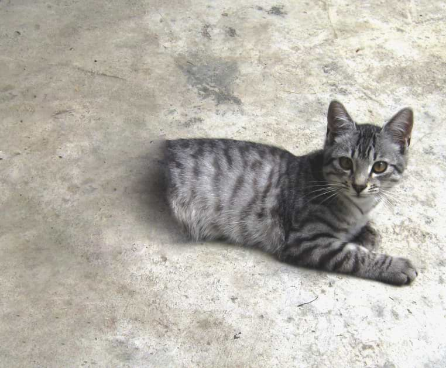

SCP-529
Item #: SCP-529
Object Class: Safe
Special Containment Procedures: No special precautions have yet proven necessary. "Josie" is quite affectionate, and at this stage is free to move about the lower levels of the facility. Staff are not permitted to feed cheese to her - she will become distressed if not given sufficient cheese.
Description: SCP-529 is a small house cat (Felis catus) with grey tabby markings.
Parts of the animal to the rear of the end of the ribcage appear to be missing. The body terminates sharply as if sliced in two.
In spite of this, the animal has no health problems, and moves about as if its hindquarters were still in place. For example, walking takes place as usual, and some time after feeding the animal makes motions as if to void itself of waste matter.
The cross-section does not display the interior of the animal, but appears pure black to the eye, and absorbs all non-visible wavelengths of light. It is slightly yielding to the touch. Gentle stroking of this area sometimes yields a positive reaction (purring and so on) but more usually leads to the creature turning on the agent, claws at the ready. Those scratched have experienced no abnormalities.
The hind regions do not appear to be invisible - a cursory examination will show that there are no hindquarters. DNA testing has shown the animal to be female.
{kind=link}